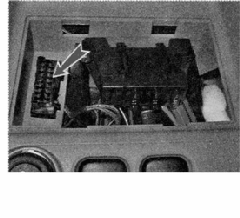

Проверка технического состояния системы управления двигателемЭлектронный блок управления (ЭБУ) системы управления двигателем имеет режим самодиагностики. При включении зажигания должна загореться контрольная лампа неисправности системы управления двигателем, что свидетельствует о работоспособности системы диагностики. Если система управления двигателем исправна, то после запуска двигателя лампа должна погаснуть. В процессе работы ЭБУ контролирует исправность всех элементов и цепей системы управления двигателем. Обнаружив неисправность, ЭБУ переводит систему управления двигателем на резервный режим работы и включает контрольную лампу неисправности двигателя, расположенную на щитке приборов. Двигатель при этом сможет продолжить работу (кроме случая неисправности датчика положения коленчатого вала), что позволяет доехать до места ремонта своим ходом. Коды обнаруженных неисправностей ЭБУ записывает в оперативную память (ОЗУ). Для считывания кодов неисправности к системе управления двигателем необходимо подключить внешнее диагностическое устройство, например, ДСТ-2М. Для этого в системе выполнен диагностический разъем. Доступ к соединительной колодке разъема закрыт декоративной крышкой Чтобы открыть крышку, подденьте ее отверткой со стороны центральной консоли панели приборов Считывать коды неисправности можно в сервисном центре, располагающем необходимым оборудованием. При техническом облуживании и ремонте системы управления двигателем необходимо соблюдать предосторожности: • Не касайтесь выводов ЭБУ руками — система управления двигателем — микропроцессорная, электронные компоненты ЭБУ могут быть повреждены электростатическим разрядом. • Приступая к ремонту автомобиля (особенно, если операции связаны с демонтажом элементов системы управления двигателем), снимите клемму с отрицательного вывода аккумуляторной батареи. При отсоединении аккумуляторной батареи от сети автомобиля из памяти ЭБУ будут удалены коды неисправностей. • Во многих случаях для проверки элементов системы управления двигателем необходимо наличие в электрической цепи системы напряжения питания. При этом отсоединять колодки проводов от датчиков и исполнительных элементов системы управления двигателем допускается только после выключения зажигания. • Отсоединять колодку жгута проводов от ЭБУ можно только после снятия клеммы с отрицательного вывода аккумуляторной батареи. • При необходимости подсоединить аккумуляторную батарею к электрической сети автомобиля во время ремонта предварительно убедитесь в том, что отсоединенные провода (выводы колодок, концы проводов) не замыкают на «массу» и что зажигание выключено. Подсоедините сначала клемму к положительному выводу аккумуляторной батареи, а затем к отрицательному. Включайте зажигание только на время выполнения измерений. • В системе управления двигателем используются электронные компоненты, напряжение питания которых 5 В. Подача на них напряжения от электрической сети автомобиля (напряжение в которой более 12 В) приведет к выходу из строя системы управления двигателем. • Для проверки системы управления двигателем используйте мультиметр, внутреннее сопротивление прибора в режиме вольтметра должно быть не менее 10 МОм. При необходимости для проверки цепей питания, находящихся под напряжением 12 В, можно воспользоваться контрольной лампой, но мощность лампы должна быть меньше 4 Вт (подойдет контрольная лампа щитка приборов А 12-1,2-1 мощность 1,2 Вт или лампа подсветки прикуривателя АМН 12-3-1 - 3 Вт). • Перед запуском двигателя убедитесь, что клеммы надежно закреплены на выводах аккумуляторной батареи. • Во избежание выхода из строя электронных компонентов ЭБУ нельзя при работающем двигателе отсоединять клеммы проводов от выводов аккумуляторной батареи. Проверка состояния элементов системы управления двигателем показана далее в соответствующих разделах главы «Система управления двигателем». |